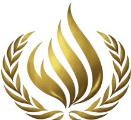
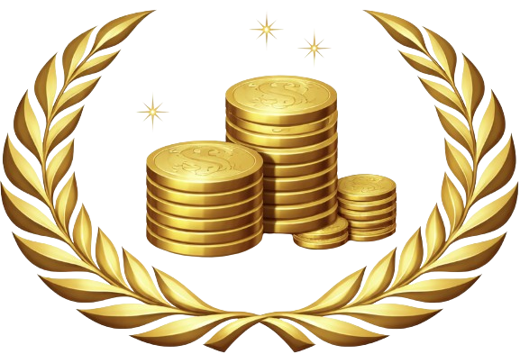
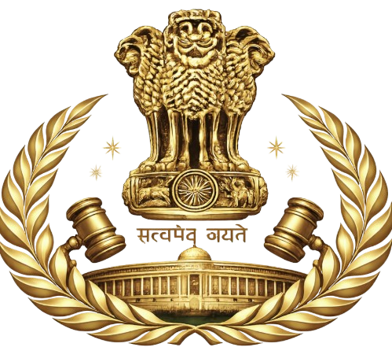
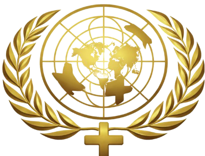

Saveetha University · SIMATS Engineering
Five Distinguished Forums for Global Discourse
The committees of SIMATS MUN 2026 represent five distinguished global and national platforms where delegates engage in rigorous deliberation on pressing international, domestic, and policy-driven issues. Each committee challenges research capability, diplomatic acumen, negotiation strategy, and policy-drafting precision — mirroring the real-world mechanics of global governance and diplomacy.

Human Rights Implications of Climate Change: Ensuring Environmental Justice and Climate Resilience.
The United Nations Human Rights Council stands as one of the most morally imperative forums in the international system, dedicated to the promotion and protection of fundamental human rights across the globe. Delegates representing member nations will deliberate on deepening crises of civil liberties, extrajudicial detentions, humanitarian abuses, and the erosion of rights-based frameworks in conflict-affected regions.
This committee demands that delegates engage deeply with international humanitarian law, the Geneva Conventions, and the UN Charter's human rights provisions while constructing balanced, enforceable, and politically viable resolutions. UNHRC at SIMATS MUN 2026 challenges delegates to navigate the tension between state sovereignty and universal human rights obligations.

Addressing the Impact of Geo-Political Uprisings in the Middle East on Regional Macroeconomic Stability and Global Financial Development.
The United Nations Economic and Financial Committee (ECOFIN) is the Second Committee of the UN General Assembly, serving as the principal forum for the international community to deliberate on matters of global economic policy, financial stability, sustainable development finance, and the reform of international monetary institutions.
At SIMATS MUN 2026, ECOFIN challenges delegates to grapple with the complexities of sovereign debt restructuring, the role of the IMF and World Bank in developing economies, and the architecture of a more resilient and equitable global financial system — crafting forward-looking resolutions with the precision of an economist and the finesse of a statesman.

Discussing the Digital Privacy Data Protection Act, 2023 with special emphasis on the recent rules.
The All India Political Parties Meet is SIMATS MUN 2026's most politically charged committee — a high-fidelity simulation of India's democratic parliamentary discourse. Delegates assume the roles of representatives from India's diverse political landscape, bringing authentic party positions, ideological standpoints, and legislative strategies to the committee floor.
AIPPM is characterised by dynamic cross-party debate, real-time political interventions, and the necessity of building workable legislative coalitions across ideological divides. Delegates must demonstrate thorough understanding of Indian constitutional law, parliamentary procedure, and the complex interplay between national security imperatives and civil liberties.

Discussing global religious, social and cultural practices undermining women and it's related human rights violation with specific emphasis on bodily autonomy.
The UN Commission on the Status of Women is the principal global intergovernmental body exclusively dedicated to the promotion of gender equality and the empowerment of women. Delegates will deliberate on structural barriers to women's rights, examine existing legislative frameworks, and construct forward-looking resolutions that advance equitable policy across member states.
UNCSW at SIMATS MUN 2026 challenges delegates to engage with international human rights instruments including CEDAW, the Beijing Platform for Action, and the SDG 5 frameworks, while balancing cultural, socioeconomic, and political considerations across member state contexts.
Documenting, Reporting, and Analysing the Proceedings of SIMATS MUN 2026 with Journalistic Excellence
The International Press Corps is the media arm of SIMATS MUN 2026, responsible for real-time journalistic coverage and editorial documentation of all conference proceedings. IPC delegates operate as professional journalists — reporting from committee rooms, conducting delegate interviews, drafting press releases, and producing digital and written media content that captures the intellectual pulse of the conference.
Unlike traditional committees, IPC delegates represent media organisations rather than countries. The IPC provides an unparalleled opportunity for delegates with interests in journalism, communications, public relations, and digital media to develop real-world skills in fast-paced editorial environments — building a tangible professional portfolio in the process.
A Framework Built for Rigorous Diplomatic Simulation
Each committee is presided over by a dedicated Chair and Vice-Chair who manage sessions, maintain procedural order, evaluate delegate performance, and ensure the highest standards of diplomatic discourse.
Delegates are assigned specific country portfolios or political party roles prior to the conference, reflecting a balance of global representation to ensure each perspective is meaningfully heard.
All committees operate according to a standard set of MUN Rules of Procedure governing speakers lists, moderated and unmoderated caucuses, motion procedures, and voting mechanisms.
The culmination of each session is the drafting, debating, and voting on resolutions. These documents represent the collective diplomatic output of the committee and form part of delegate assessment.
The committees of SIMATS MUN 2026 are designed with singular purpose — to challenge the intellect, strengthen the diplomatic character, and cultivate the globally aware leaders that our world demands. Whether deliberating on human rights in conflict zones, advancing gender equality, navigating India's most contentious policy debates, or chronicling the pulse of diplomacy through the press, every delegate will emerge transformed.